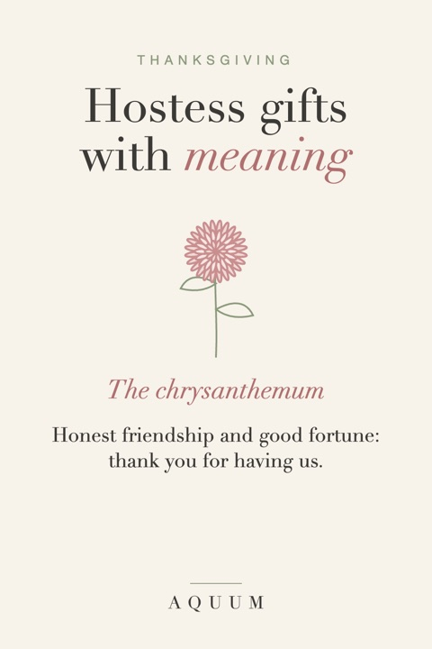

Thanksgiving Hostess Gift Ideas: The Chrysanthemum and Other Thank-Yous
2026-09-30
Written by the team behind Aquum, a small birth flower gift shop. How we make money.

Showing up to Thanksgiving with a bottle of wine is fine. Showing up with something that says "thank you for having us" in a way the host remembers is better, and it doesn't have to cost more.
The flower of the season: the chrysanthemum
The chrysanthemum is November's birth flower, and it fits Thanksgiving almost too well. It stands for honest friendship and good fortune, and in many places it's the flower of autumn itself: the pots of mums on every porch this time of year are chrysanthemums. A gift with a chrysanthemum on it says exactly what a hostess gift should say. Read more in our November birth flower guide.
Small gifts that land well
- A potted mum in a color that matches the table. It outlasts cut flowers and doesn't need a vase at the worst possible moment.
- A mug with a chrysanthemum for the morning after, when the kitchen is finally quiet.
- A tote bag for the leftovers she'll be sending home with everyone.
- A card with the flower's meaning. One line about friendship and good fortune, and one line about why you're grateful to be at her table.
If you know the host's birth month
Even better: bring something with her own birth flower instead. It turns a polite gift into a personal one. The month-by-month guide has every flower and what it means.
A few hostess gift rules
- Don't bring something she has to deal with right away. Cut flowers need a vase and water while she's basting a turkey. A potted plant or a wrapped gift can wait.
- Say it's for her, not for the table, so she doesn't feel she has to serve it.
- Keep it small. A hostess gift is a thank-you, not a present that asks for one in return.
Thanksgiving is also the start of the gift season. If you're already thinking about December, our Christmas gift guide has ideas for everyone on the list.
Setting the table yourself? Our free birth flower place cards give every guest their own flower.